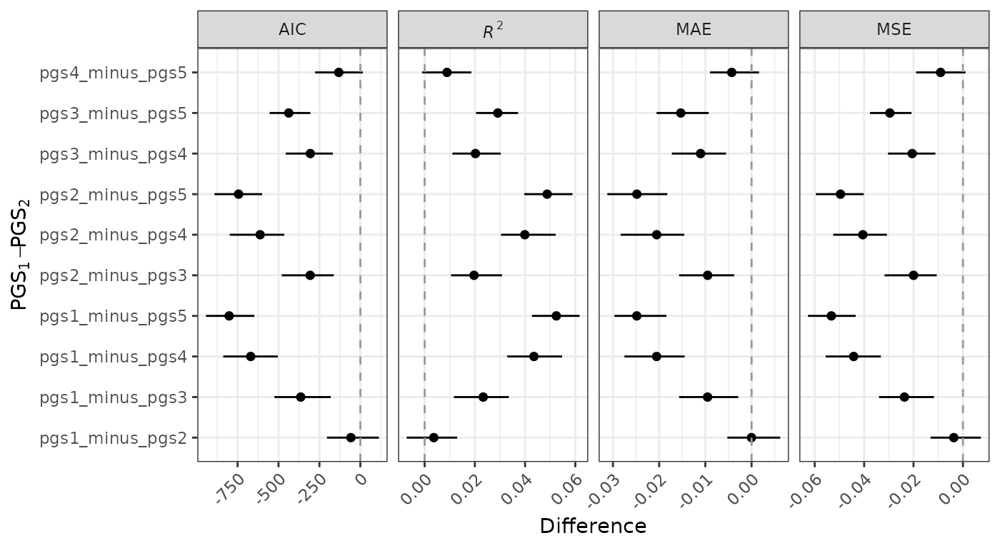

Getting Started with pgsmetrics
pgsmetrics.Rmd
library(pgsmetrics)
#> Loading required package: data.table
#> Error in get(paste0(generic, ".", class), envir = get_method_env()) :
#> object 'type_sum.accel' not foundExample (binary trait)
First, let’s simulate some data:
n_simul <- 1e4
df <- simulate_data(n = n_simul, n_pgs = 5)Now, let’s use the pgsmetrics function to fit models
with different PGS and compute performance metrics. In this example,
we’ll use 5 PGS with varying degree of measurement error (TODO see
PGS simulation vignette). We assume a binary variable
(y_bin), adjust for age, and use 100 bootstrap
replicates (TODO
or
recommended).
results <- pgsmetrics(
df,
pgs = paste0("pgs", 1:5),
dep = "y_bin",
covars = c("age"),
n_boot = 100,
n_cores = 4
)
#> Binary outcome variable detected
#> bootstrapping (standard)...
#> processing resamples...
#> computing observed values...
#> computing differences...The metrics are stored under results$metrics. There are
three different values for each PGS and each metric, one for a
covariate-only model (no PGS, cov), one for a full model
(full), and one for the difference between
full and cov (incremental value,
full - cov).
print(results, n = 1)
#> Dependent variable: y_bin
#> Covariates: age
#> Bootstrap method: standard
#> Bootstrap iterations: 100
#> Results ($metrics):
#> pgs metric type observed ci_lower ci_upper
#> <fctr> <char> <fctr> <num> <num> <num>
#> 1: pgs1 aic cov 9738.05498 9551.3446797 9.921613e+03
#> ---
#> 75: pgs5 roc_auc partial 0.02631 0.0214058 3.214482e-02
#> Other results for ranks/differences are available under $ranks/$diffLet’s plot the metrics
plot(results, model_type = "partial", ncol = 5)In each bootstrap replication, we rank the PGS based on the metrics and compute confidence intervals. Let’s plot the ranks.
plot(results, type = "ranks", ncol = 5)Diff
plot(results, type = "diff", ncol = 5)Example (continuous trait)
results_quant <- pgsmetrics(
df,
pgs = paste0("pgs", 1:5),
dep = "y",
covars = c("age"),
n_boot = 100,
n_cores = 4
)
#> Continuous outcome variable detected
#> bootstrapping (standard)...
#> processing resamples...
#> computing observed values...
#> computing differences...The metrics are stored under results_quant$metrics
print(results_quant, n = 1)
#> Dependent variable: y
#> Covariates: age
#> Bootstrap method: standard
#> Bootstrap iterations: 100
#> Results ($metrics):
#> pgs metric type observed ci_lower ci_upper
#> <fctr> <char> <fctr> <num> <num> <num>
#> 1: pgs1 aic cov 25558.24975 2.530017e+04 2.578349e+04
#> ---
#> 60: pgs5 r2 partial 0.06127 5.204217e-02 7.017316e-02
#> Other results for ranks/differences are available under $ranks/$diffLet’s plot the metrics
plot(results_quant, ncol = 5)Let’s plot the ranks
plot(results_quant, type = "ranks", ncol = 5)Diff
plot(results_quant, type = "diff", ncol = 4)
Calibration
TODO text.
p_cal1 <- plot_calibration(df, pgs = "pgs1", dep = "y_bin")
p_cal2 <- plot_calibration(df, pgs = "pgs1", dep = "y_bin", covars = c("age", "sex"))
cowplot::plot_grid(p_cal1, p_cal2, nrow = 1)Net benefit / decision curves
TODO text.
p_dcurve1 <- plot_dcurve(df, pgs = "pgs1", dep = "y_bin")
p_dcurve2 <- plot_dcurve(df, pgs = "pgs1", dep = "y_bin", covars = c("age", "sex"))
cowplot::plot_grid(p_dcurve1, p_dcurve2, nrow = 1)